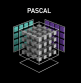

accelerate

Virtual Box
Readme
Data Experiments
Getting Started
Prerequisites
The following commands or tools need to be installed in advance.
GNU Time, GNU sed, GNU awk, GNU getopt
hdfs - hadoop 2.7.0
scala - version 2.11.12
java - version 1.8.0_60
dotnet - 5.0.403
maven - 3.8.4
sbt - 1.4.3
Config dbtoaster
clone dbtoaster and checkout to commit id 3c62c0c1da9fcbeedfc79fe7969faa24184ae293
apply the changes in dbtoaster_modified to your local dbtoaster directory(copy and replace)
delete the ddbtoaster/lms/DefaultLMSGen.scala in your local dbtoaster directory
config dbtoaster as described in https://github.com/dbtoaster/dbtoaster-backend/blob/master/README.md
add partition info to src/global/Partitioner.ml from dbtoaster_frontend_modified to your local dbtoaster-a5 directory (copy and replace)
make your local dbtoaster-a5
Configurations
Set the following configuration items to the correct values before running.
Back to Page.